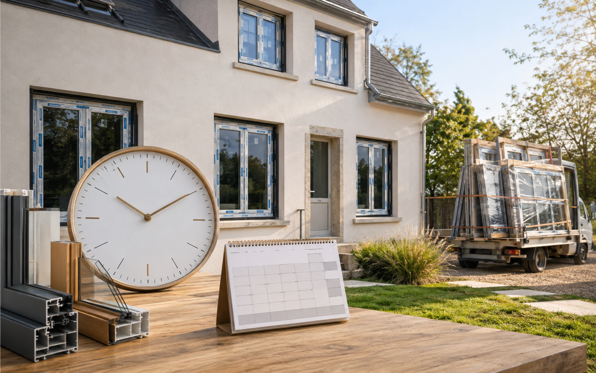

Commande, fabrication, autorisations, pose et finitions : les étapes qui expliquent le calendrier d'un chantier de menuiseries.
Les aides dépendent du foyer, du logement, des travaux et de l'ordre des démarches.
Le montant utile est celui qui reste à payer après aides, options, pose et finitions.
La qualification et le devis doivent être vérifiés avant signature.
Un dossier mal ordonné peut faire perdre une aide ou retarder le chantier.
Le délai ne commence pas seulement le jour de la pose
Un chantier de menuiseries comprend plusieurs étapes : rendez-vous, prise de cotes, devis, validation, autorisations éventuelles, fabrication, livraison, pose et finitions. Un délai réaliste dépend donc du produit et des contraintes du projet.
Ordres de grandeur à comprendre | | Projet | Pose sur chantier | Vigilance | Fenêtres | Souvent plusieurs fenêtres par jour selon accès | Finitions et reprises intérieures | Porte d'entrée | Souvent une journée | Seuil, sécurité, réglages | Volets | Variable selon motorisation | Électricité et accès façade | Portail | Souvent une journée hors maçonnerie | Piliers, seuil, alimentation
Ce qui rallonge le calendrier - Produit sur mesure ou couleur spécifique.
- Déclaration préalable ou accord de copropriété.
- Travaux électriques à coordonner.
- Maçonnerie, seuils ou supports à reprendre.
- Accès compliqué, étage, façade exposée ou chantier occupé.
Comment lire un délai annoncé sans mauvaise surprise
Un délai court peut être réaliste pour un produit standard, mais il devient fragile si la couleur est spécifique, si la façade demande une autorisation ou si plusieurs corps de métier doivent intervenir. Le bon repère consiste à distinguer le délai de fabrication, le délai administratif et le temps réel de pose chez vous.
- Pour les fenêtres, anticipez les finitions intérieures, surtout en dépose totale.
- Pour les volets motorisés, validez l'alimentation ou la solution solaire avant la commande.
- Pour un portail, séparez bien la pose du portail, la motorisation et les éventuelles reprises de maçonnerie.
Ce qu'il faut bloquer dès le départ -
La date limite souhaitée : emménagement, vente, vacances ou arrivée du froid.
- Les autorisations éventuelles : mairie, copropriété, lotissement.
- Les points bloquants : accès, étage, électricité, seuils, maçonnerie ou finitions intérieures. Vous avez une date cible ? On cale le calendrier avec les autorisations, la fabrication et la pose. Planifier mon chantier
Ce qui fait vraiment varier le délai d’un chantier
Le délai ne se limite pas au jour de pose. Il comprend la validation du projet, la prise de cotes, les autorisations éventuelles, la fabrication sur mesure, la livraison et l’organisation du chantier.
- Fabrication - Le sur-mesure prend du temps : Dimensions spéciales, teintes particulières, vitrages techniques et motorisations peuvent allonger le délai.
- Administratif - Une autorisation peut décaler la commande : Si l’aspect extérieur change, il vaut mieux attendre la validation avant de lancer une fabrication définitive.
- Pose - L’accès au chantier change l’organisation : Étage, stationnement, copropriété, protection intérieure ou reprise de tableau modifient le temps nécessaire sur place.
- Service-Public.fr - remplacement de fenêtres, volets ou portesCette fiche confirme qu’une déclaration préalable est nécessaire quand le remplacement change l’aspect extérieur du bâtiment.
- Service-Public.fr - travaux en copropriétéCette fiche rappelle que certains travaux privatifs doivent être autorisés s’ils touchent l’aspect extérieur ou des parties communes.
- Service-Public.fr - travaux extérieurs d’une maisonCette fiche sert de repère pour vérifier les cas où une autorisation d’urbanisme peut être demandée.
- France Rénov’ - MaPrimeRénov’ par gesteCette page précise les conditions principales : logement, revenus, travaux, entreprise RGE et cumul possible avec d’autres aides.
- France Rénov’ - rénovation d’ampleurCette page explique le cas d’une rénovation globale, avec gain énergétique et accompagnement obligatoire.
- France Rénov’ - certificats d’économies d’énergieCette page explique les primes CEE, souvent à comparer avec MaPrimeRénov’ et l’éco-prêt à taux zéro.